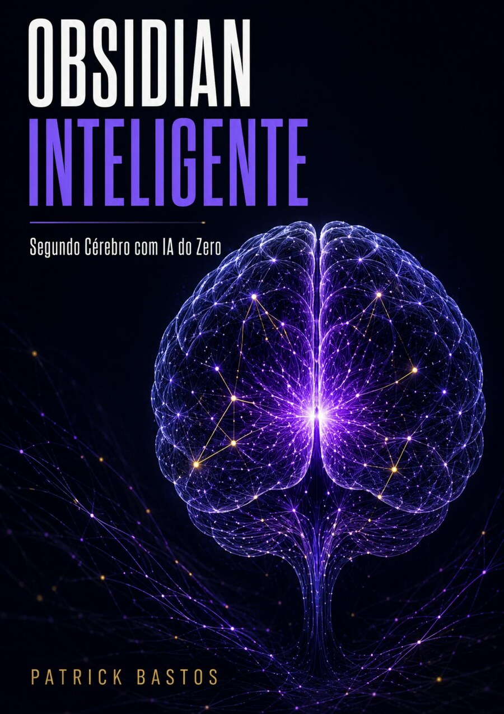
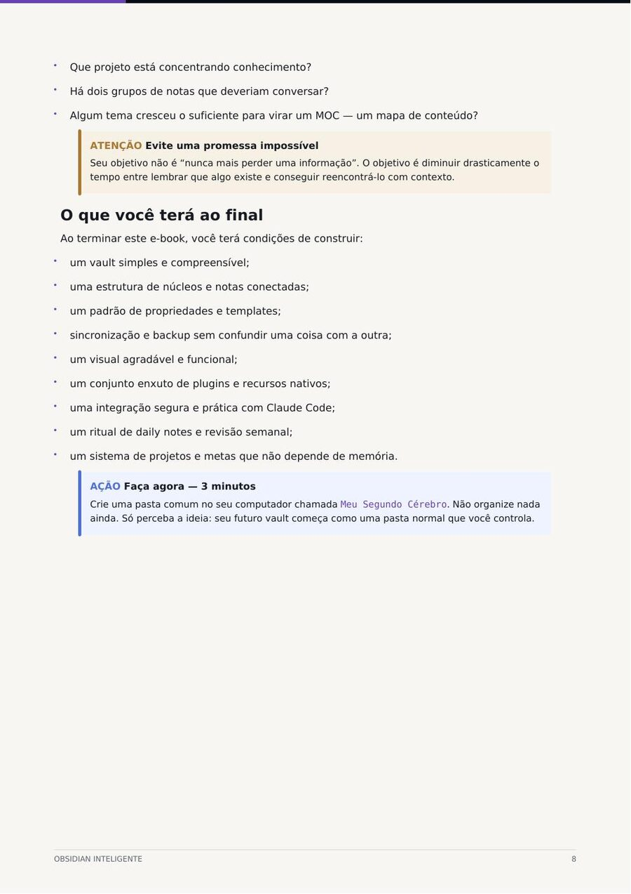
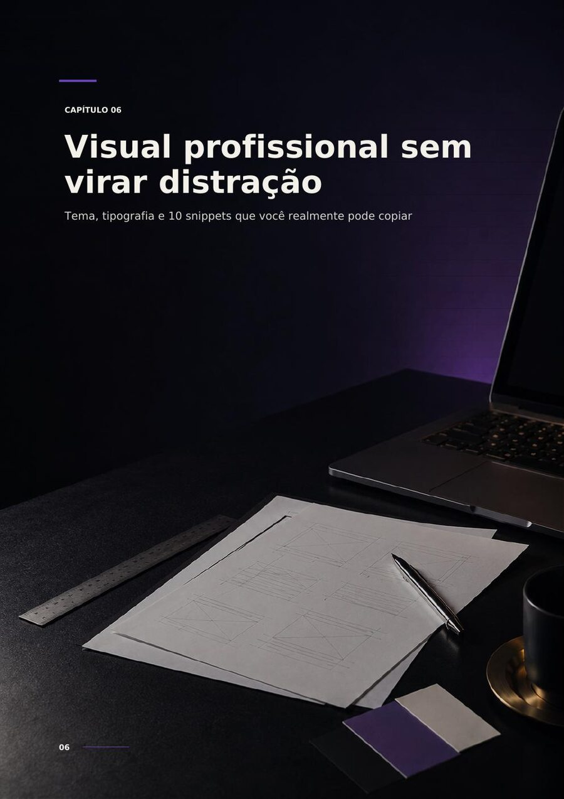
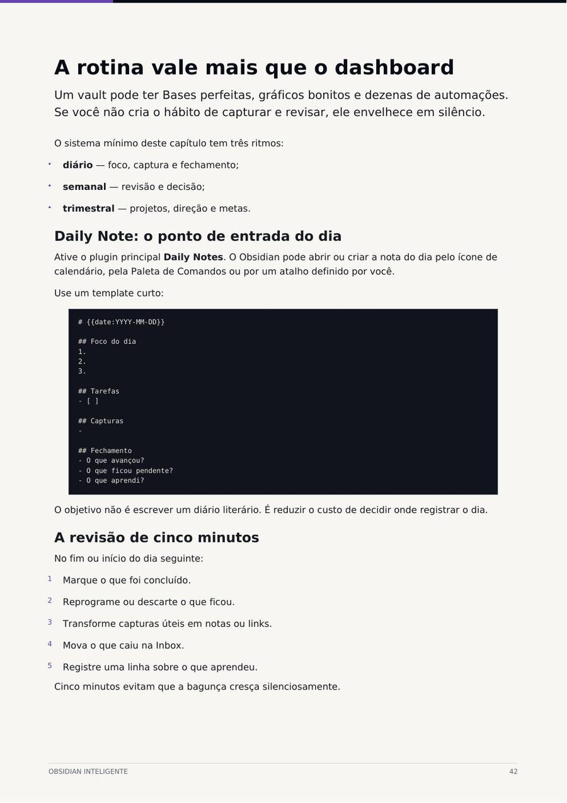

01
Informação dispersa
Notas e referências ficam espalhadas em lugares que não conversam entre si.

Aprenda, do zero, a organizar notas, projetos e conhecimento no Obsidian — e use o Claude para encontrar conexões e transformar informação em próximos passos.
Quando ideias ficam divididas entre conversas, documentos, capturas de tela e aplicativos, sua memória vira o sistema de busca. E ela não foi feita para carregar tudo.
Notas e referências ficam espalhadas em lugares que não conversam entre si.
Você encontra o arquivo, mas não lembra por que salvou nem como aquilo se conecta.
Boas ideias perdem força porque não existe um sistema claro de revisão e próxima ação.
O Obsidian transforma arquivos simples em uma rede de conhecimento. O Claude ajuda a organizar, localizar padrões e propor ações — sem tirar de você o controle das decisões.



O guia combina explicação clara, exemplos visuais e ações práticas. Você entende a lógica antes de configurar — e termina cada etapa sabendo o que fazer em seguida.
O guia principal constrói o sistema. O bônus mostra como operar esse sistema com IA no dia a dia.
52 páginas para sair do zero e construir um sistema pessoal de conhecimento, com organização, sincronização, personalização e integração com Claude.
14 páginas com Prompt Zero + 10 prompts operacionais para organizar, conectar, revisar e executar.
Sem promessas mágicas: o produto entrega um método claro e os recursos para você construir seu sistema.
Um e-book principal em PDF com 52 páginas e um bônus em PDF de 14 páginas com Prompt Zero e 10 prompts para Obsidian + Claude. O acesso é digital após a confirmação da compra.
Não. O material foi escrito para iniciantes e explica cada conceito antes da execução. Em alguns recursos de IA você verá comandos, mas o guia mostra como utilizá-los.
O Obsidian oferece uso pessoal gratuito. Alguns serviços opcionais do ecossistema podem ser pagos, e o guia apresenta alternativas para sincronização.
Não. São dois materiais em PDF, pensados para consulta no seu ritmo, sem calendário de aulas ou prazo para concluir.
Sim. Os PDFs podem ser abertos no celular, tablet ou computador. Para realizar as configurações, a experiência costuma ser melhor no computador.
Sim. A compra possui garantia de 7 dias, conforme as condições apresentadas no checkout da Cakto.
Comece hoje a construir um sistema que organiza, conecta e transforma informação em ação.